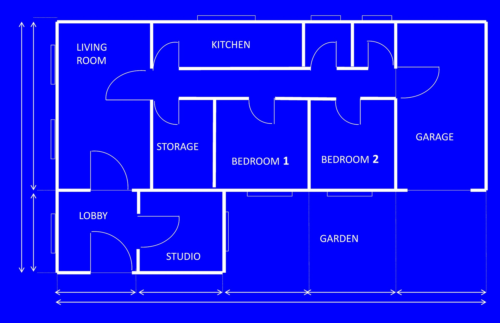
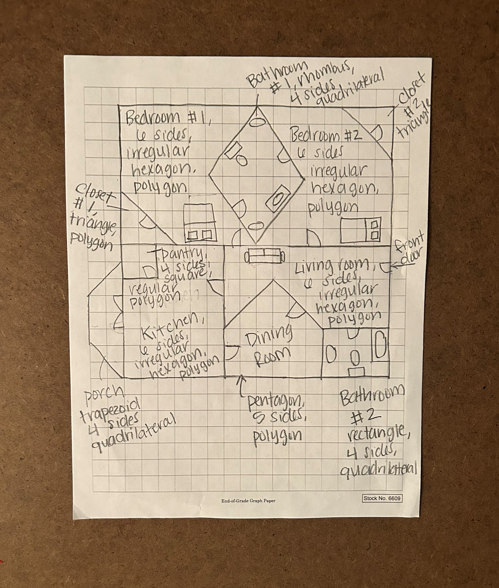
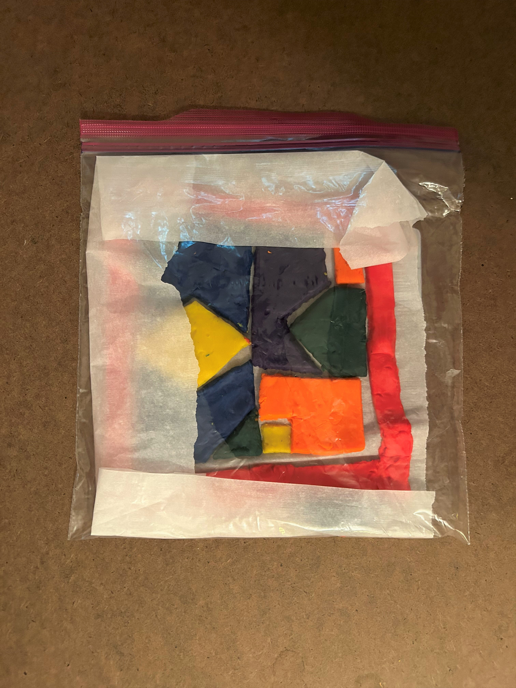
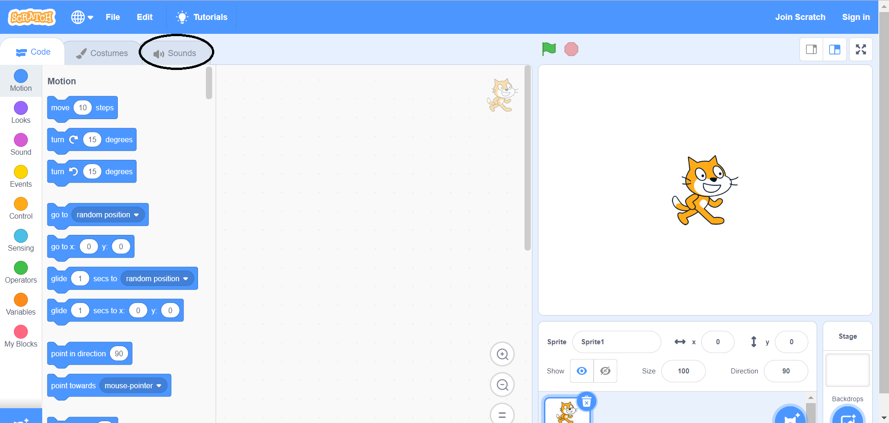
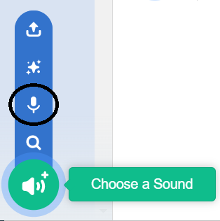
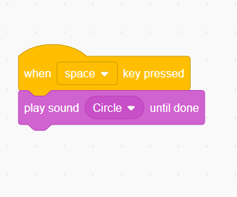
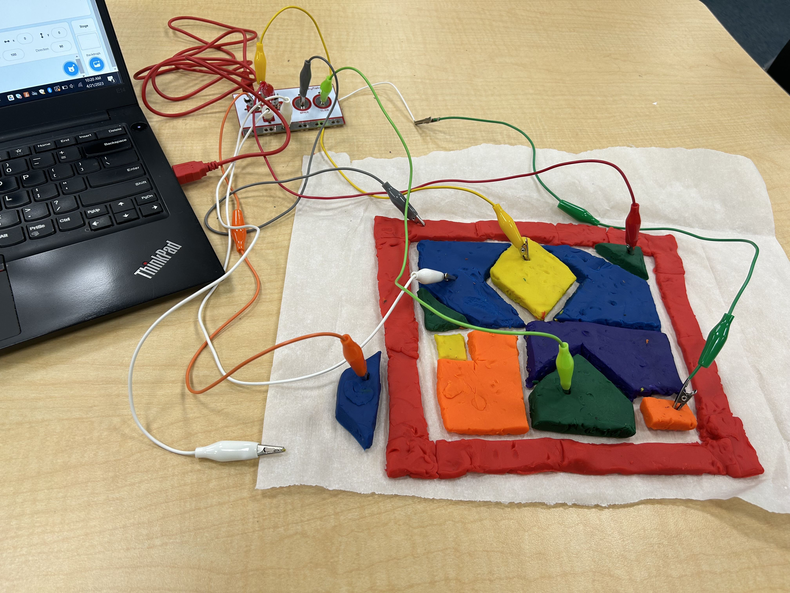

Do It! Makey Makey: House of Shapes
 The Challenge
The Challenge
Your challenge is to create a 2D model of a house out of dough that contains shapes and a circuit. You will draw a blueprint that meets certain requirements to plan your home and will then use Scratch and Makey Makey to program your home to describe the shapes when touched by users.
Project Steps
-
Design Your House
-
Draw Your Blueprint
-
Build Your House
-
Record Your Sounds in Scratch
-
Program Your House
-
Wire Makey Makey
Design Your House
Start by brainstorming how you want your house to look. Keep in mind that you are making a 2D model so you will be using 2D shapes. You and your partner may find it helpful to write down your ideas on a piece of paper. What rooms do you want to include in your house? Think of how you can incorporate different shapes using different rooms. Think of your own home and other homes that you have seen and been inside of to help you come up with different ideas. Remember all houses look different! Your house should meet the following requirements:
- Contain at least 6 different shapes
- At least 5 of your shapes should be polygons
- At least 4 of your shapes should be quadrilaterals
- At least 1 of your shapes should be a regular quadrilateral

Draw Your Blueprint
Next, draw your blueprint based off of your home design. Remember, your blueprint needs to be descriptive and detailed. You may want to search for examples of blueprints online to get an idea of how it should look. Your blueprint should meet the following requirements:
- Be a complete drawing of your home
- Have each shape labeled with its name, attributes listed next to the shape, and labeled as either quadrilateral, polygon or both
- Be drawn on graph paper
Remember to be specific! Your blueprint is going to guide you later on when you are making your Scratch program.
NOTE: You may have trouble fitting all of your information on your blueprint. If this happens, you can get an extra piece of paper to write your additional notes on. Create a key to keep your details organized.

Build Your House
Now comes the fun part! Create the 2D model of your house. Follow your blueprint and use the dough that is included in your Makey Makey accessory kit to physically create your house using the different shapes. You may find it helpful to make your house on top of paper, such as poster paper or parchment paper, so it does not stick and can be moved if needed. Keep in mind that the dough is conductive. This means that if your shapes are touching, it could cause your circuits to cross and cause issues later on when you are connecting with Makey Makey. Remember, your blueprint is your guide so your house should look like the one that you drew.
When you are making your house you may want to consider:
- Will certain shapes or categories of shapes be a certain color? (ex: all squares are blue or all quadrilaterals are red)
- How can I make each shape thick enough so that the Makey Makey can connect to it?
- How can I make sure the circuits will not cross when I connect them to the dough?

NOTE: You may not finish creating your house at one time. That is okay! To store your home for future use, simply put your model and the paper it is on in your Ziploc bag. Be very careful while you are moving it as to not break it apart. Let as much air out of your bag as possible and make sure it is completely sealed shut. This will keep your dough from drying out. Store the Ziploc bag flat so that your home does not shift or break in any way.

Record Your Sounds in Scratch
Record yourself in Scratch describing the different shapes that you have used in your house. This will make it easier when you are programming your events. Use your blueprint and your detailed notes as your script. You will record yourself by creating new sounds in Scratch for each shape. To create sounds in Scratch:
- Click on “Sounds”

- Hover on the “Choose a sound” button (Speaker)
- Select “Record” (microphone)

- Click on the red circle to record you speaking
- When you are done recording, click the red square
- Edit your recording, save it, or record a new one
When you record your sounds keep the following in mind:
- Your sounds should be named for the shapes/rooms you are describing (ex: living room hexagon)
- Each recording should include: the name of the shape, the attributes of the shape, and whether the shape is a polygon, quadrilateral, both, or neither. (Ex: “This is a circle. It is a round shape that has no corners or vertices. It is neither a polygon nor a quadrilateral because it has no sides.”)
Program Your House
Program each event in Scratch so that your house is interactive when touched. For each shape on your house you will need to program an event so that when a user touches it they hear: the name of the shape, the attributes of the shape, and the category that the shape falls into. When you connect your Makey Makey to your house, you will need to ensure that you match your shape to the correct event. Create an event block for each shape and then choose the correct sound to play.

Wire Makey Makey
Your last project step is to connect your alligator clips from your Makey Makey kit to each shape on your house. Remember to align them with the correct event on your Scratch program so that your program works correctly for you user. Test out your circuit to ensure they are working correctly with your program. If there are any issues then you will want to go back and debug your program and double check to make sure there are no connection issues. Hand off your final working house model to a classmate to test out and learn about the attributes of shapes.
